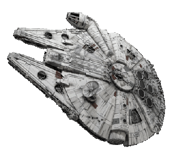
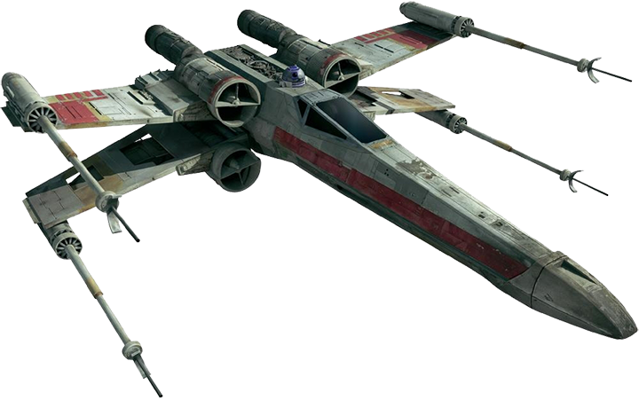
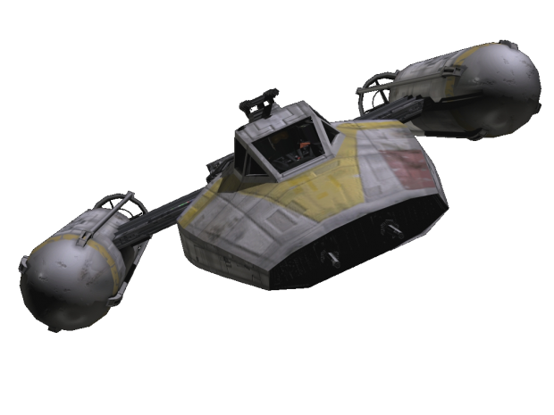
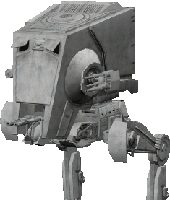
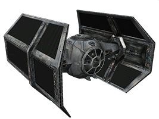

""
- Franchise Tagline -

Millenium Falcon
Alliance |
Rebel Alliance |
Class: |
Light Freighter |
Size: |
25.61(W)X8.27(H) |
Known Owners: |
Han Solo, Lando Calrissian |
X-Wing Star Fighter
Alliance: |
Rebel Alliance |
Class: |
Assault Star Fighter |
Size: |
12.5m (L) |
Crew: |
Pilot, Astromech Droid |
Y-Wing Star Fighter
Alliance: |
Rebel Alliance |
Class: |
Assault Star Fighter |
Size: |
16m (L) X 23.4m (H) |
Crew: |
Pilot |
AT-ST
Alliance: |
Galactic Empire |
Full Title: |
All terrain Scout Transport |
Size: |
8.6m (H) |
Crew: |
Pilot |
Tie Fighter

Alliance: |
Galactic Empire |
Class: |
Star Fighter |
Size: |
8.99m (L) |
Crew: |
1 Pilot |
Tie Bomber
Alliance: |
Galactic Empire |
Class: |
Bomber |
Size: |
9.2m (H) |
Crew: |
1 Pilot |